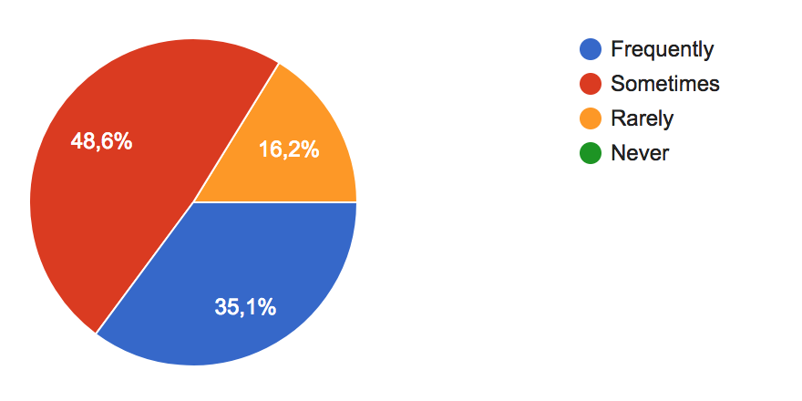
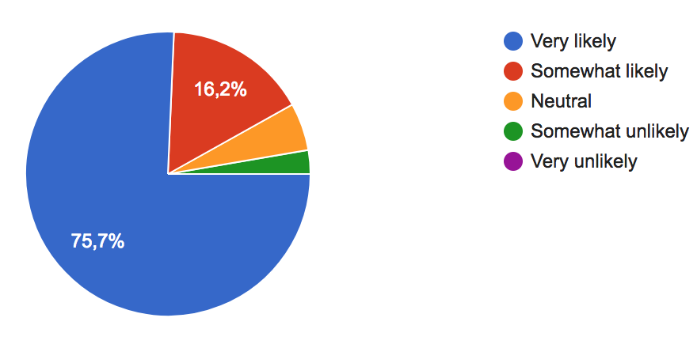
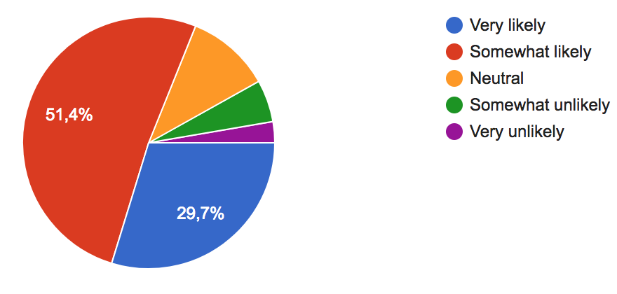
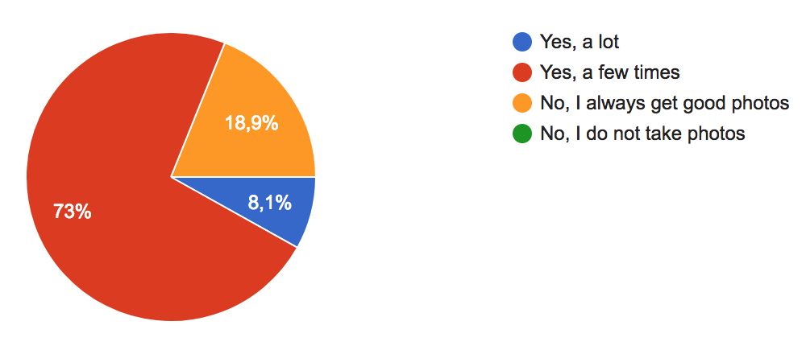
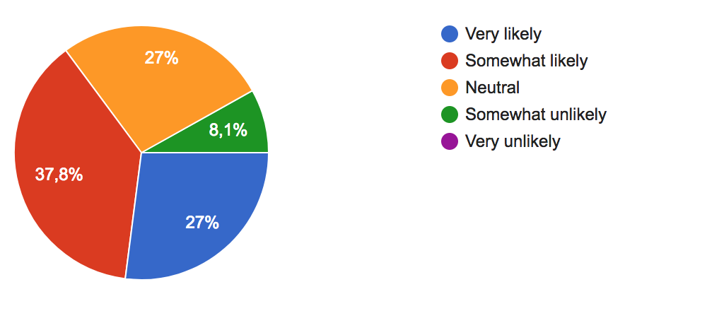
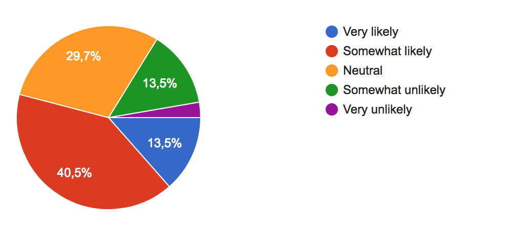
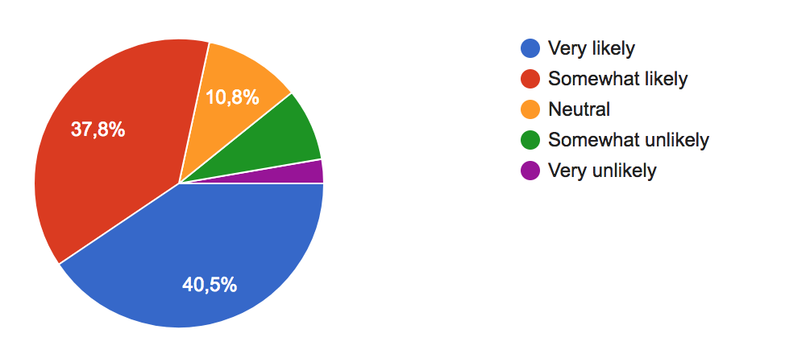
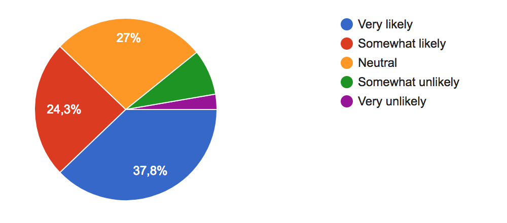

How often do you travel?

How likely is that you would take photos when you travel?

How likely is that you would share the memories from your trip to others?

Have you ever encountered problems taking a good photo during a trip?

How likely is that you would try to find a spot for taking a good photo?

How likely is that you would use a tool to plan your trip?

How likely is that you would use Google Maps to plan your trip?

How likely is that you would use an app that includes all these features?
(Custom tours, map with the best photo spots, share with friends and family, no time wasting)

As the above results show, people nowadays travel a lot and love to take pictures. The whole trip process should be taken into account, including the previous steps and the post-trip actions.
Trip planning is currently considered important, but people are not used to picking a tool to fulfil that need. Besides that, the majority would like to have an application that covers this need.
Finally, when the travel comes to an end, an important situation arises: sharing memories gathered during the trip. Social networks made this a must do.
All these facts lead to think that a tool which gathers all these features in one simple interface would be really useful for people, and could be considered as a need.